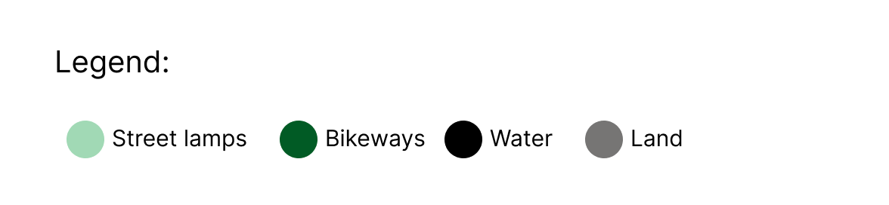
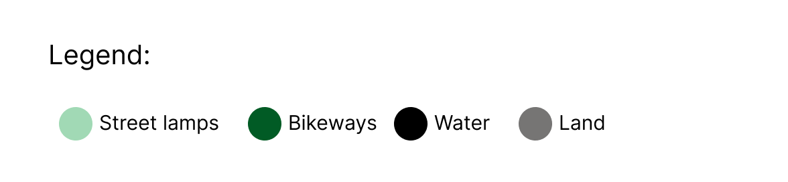

For my design choices, I wanted to keep an all-around cohesive look to both my Mapbox and infographic. I specifically chose green as my main and accent colour not only to keep things monochromatic to direct viewers attention towards the data but also as green is a colour which emits feeling of nature and activity, two key words which I feel best represent Vancouver. In the infographic, I was messing around with various designs, one example was to add many little bikers around the map to highlight the fact that biking lanes were being compared to the numbers of street lights. However, this design choice made the infographic seem too much like a doodle and took away the professionalism from the poster itself. Taking up the whole idea of an infographic and its purpose being all about showing rather than telling, I wanted to display the statistics of the street lights in a creative way. I chose that it was best able to be represented by showing how dim versus how bright the streets are according to how many lights there are on said streets. Looking back at the mapbox to see the relation, I found a very common, and obvious, pattern in the city streets of Vancouver. It seemed that the more biking pathways there were, the more lights were present. For example if there were a box formed from the bike lanes but no bike lanes in the actual box, there would be a visible decline in the amount of street lights present in that specific zone. For design and aesthetics purposes, I wanted to keep the numbers for the given data few but bold. I chose to only present a few statistical findings but have their numbers shocking to help emphasise their meanings. I was most excited to work on the infographic in this project as I was always a fan of fun play-on-words infographics which brought together interesting data and a visually pleasing design. This being said, I wanted to channel that energy into my own style of work, using shapes and shades to create a playful and educative balance to offer to my viewers. One example which I tried to portray that balance was the biker with the lights at the top right of the page. I created this graphic as I wanted to bring together the biking and light subject to create cohesiveness in my topic and discussion. This being said, I would like to practise building my skills in creating infographics as this class has taught me how they can be both fun and productive.